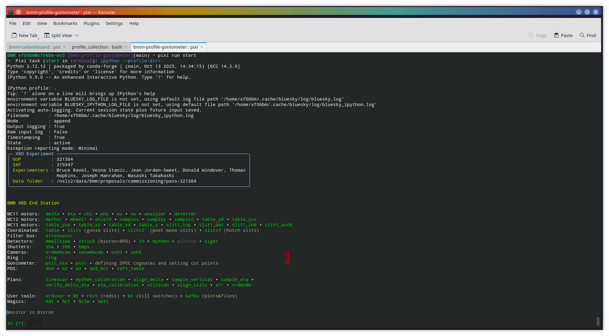
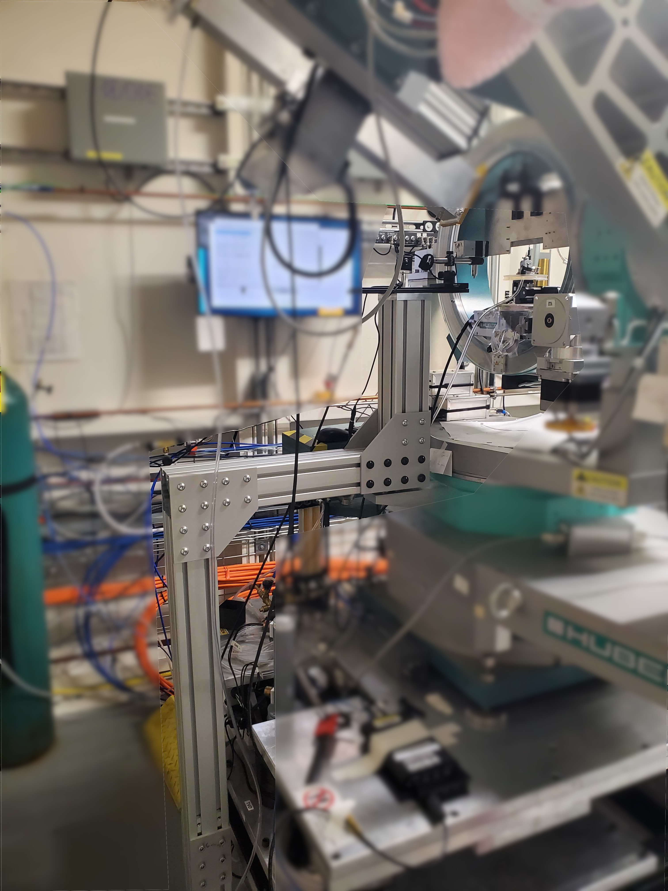
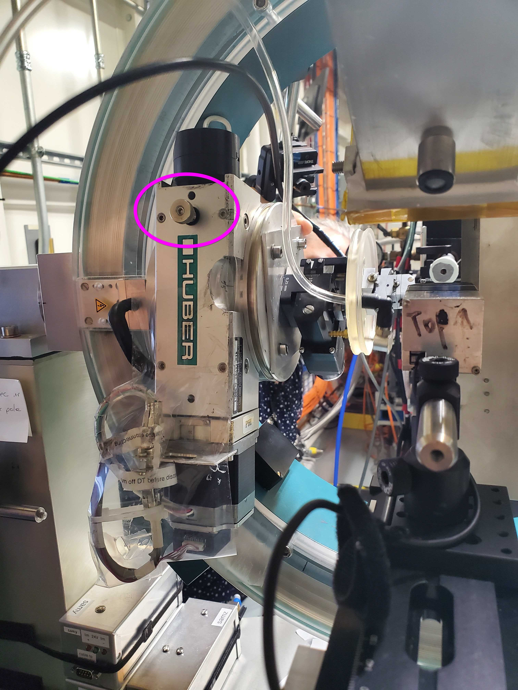
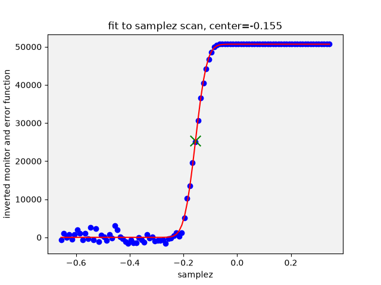
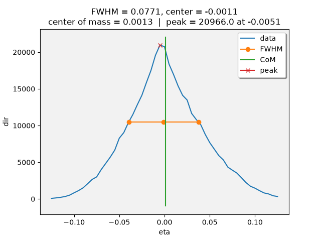
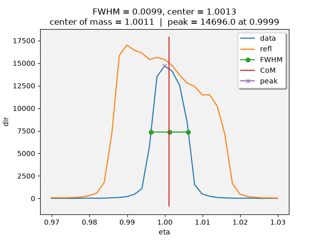

5. Preparing for XRR#
To start bsui using the goniometer profile:
cd ~/git/bmm-profile-goniometer
pixi run start


Fig. 5.1 bsui startup#
5.1. XRD mode of the photon delivery system#
The very first step for setting up the goniometer for XRR is to move the photo delivery system to the correct position for photo delivery to the goniometer position.
This involves moving
the monochromator to the specified energy
the focusing mirror to the correct pitch and bend
the harmonic rejection mirror out of the way
the hutch slit assembly (Section 2.5.5) to the correct height
the XAFS table to the correct height for supporting the flight path.
To set up the photon delivery system for scattering at 8600 eV:
RE(xrdmode())
or specify an energy:
RE(xrdmode(12000))
The single argument is the target energy in eV units. The default is 8600 eV, the normal operating energy for experiments on the goniometer.
This plan will look up the correct positions of all motors in the beamline lookup table and set all those axes moving to their correct positions.
Once all axes have arrived in position, a scan of the rocking curve of
the monochromator will be performed and dcm_pitch will be moved to
the peak of that scan.
Finally, the hutch slits will be opened wide, 7 mm wide by 1 mm tall, allowing the beam size to be determined by the gomiometer slits (see Section 2.2).
Once finished, engage the DCM feedback system (see Section 3.3.1):
feedback.engage()
Future tech!
This plan will eventually be used to perform scattering measurements at any energy above 8000 eV without having to do a time-consuming realignment of the goniometer.
To obtain consistency in lateral position of the focused beam,
Bruce is working with BLOP team in DSSI to optimize dcm_roll
and the orientation of the focusing mirror to provide stable beam
position over the energy range from 8 keV to 20 keV.
To obtain consistency in vertical position, a scan of the pitch of the focusing mirror into the goniometer slits will deliver consistent beam height.
5.2. Goniometer alignment strategy#
Note
A few things that are explicit steps in SPEC are handled
differently in Bluesky. For example, the Mythen
full_mca, ROI1, is set at Bluesky startup and does not
need to be explicitly set. All alignment steps and
associated data processing are discussed in detail in
Section 4.
Move the
deltaarm to 30 degrees to allow room for the YAG camera and its mount. Secure the mount for the YAG camera to the mounting fixture on the floor, as shown in Figure 5.2.
Fig. 5.2 The YAG camera mounted on its holder.#
Place the Mythen in the most downstream position on the (what is the arm called?). Measure and record the gap value – typically around 90 mm. See Figure 4.6 for a photo identifying what the gap is. To record the gap in a way that the data acquisition software can use, do:
xrduser.gap = 90.0
Using the YAG camera, center the pin under the beam.
Open the slits wide
RE(mv(slits.vsize, 4)) RE(mv(slits.hsize, 4))
and set the attenuators to 0
RE(mv(attenuator, 0))
Adjust
samplezto put the pin in the beam by seeing its shadow on the YAG.RE(mvr(samplez, <amount>))
Mark the position of the pin in the beam
Rotate
phistage by 180 degrees. This is most easily done by loosening the lock (circled in Figure 5.3) and rotating the stage by hand. Be sure to tighten the lock once moved.
Fig. 5.3 The lock for the
phiaxis.#Mark pin again, then mark the geometric center of those two markings
Move
table.lateralso that the center of the two markings is in the center of the beamRotate
phiby -180 degrees to verfiy this alignmentRotate
chiby -90 degrees:RE(mvr(chi, -90))
Repeat steps (c) to (g) for this orientation
Rotate
chiback to 0 degrees:RE(mvr(chi, 90))
Future Tech!
Automate the pin centering procedure using a camera that is supported by AreaDetector. Automate the angle motions and determination of pin shadow positions. Compute and move to target position in each direction.
Align the slits to be centered around the beam and define the 0 of each slit to be in the position that cuts the beam in half. This is done by:
RE(align_slits())
See Section 4.3 for more details.
After this step, reduce the amount of attenuation going into the Bicron. These are the little inserts at the bottom of the box holding the Bicron, but above the beam path. This is done because small slit height for XRR reduces the signal going into the Bicron.
Set slit sizes:
RE(mv(slits.vsize, 0.12, slits.hsize, 1.0))
This vertical size – 120 μm – is considerably smaller than the focused beam, but appropriate for an XRR measurement.
Align the table in the beam:
RE(linescan(table.vertical, 'monitor', -1, 1, 51)) RE(linescan(table.lateral, 'monitor', -2, 2, 51))
Do a linescan (Section 4.1) of the
dethormotor to center the Mythen around the beam in the horizontal direction.RE(linescan(dethor, 'mythen', -3, 3, 61))
See Section 4.4 for more details.
Perform the Mythen calibration scan:
RE(mythen_calibration(-4, 1, 1001))
This will set the bounds of the
dirandreflROIs and write a calibration report to the proposal folder. It will also record the calibration parameters. See Section 4.5 for more details.Question
What is the CHESS calibration? This needs to be written.
Verify the alignment of beam, goniometer, and detector are acceptable by scanning the
deltaarm and plotting the signal from bothdirandrefl. Thedirplot should be narrower than and well centered in thereflplot.RE(linescan(delta, 'mythen', -0.15, 0.15, 61))


You are now ready for sample alignment.
5.3. Sample alignment strategy#
A sample for XRR is usually a large, flat wafer. The correct alignment has the sample surface parallel to the beam path and at a height such that it blocks half the beam. With that alignment, the center of the beam will be on the center of the sample as the incident angle changes and the beam will spread symmetrically over the length of the sample as the angle changes.
Normally, sample alignment is fully automated using this plan:
RE(align_sample())
This performs 3 iterations of the following steps:
Align the sample vertically.
RE(sample_vertical())
This is a linescan (Section 4.1) of the
samplezmotor against the signal in direct beam ROI. Once finished an error function is fit to the measurement to find the position where the sample blocks half the beam.
An example of a step of optimizing the vertical position along with the fitted step-like function used to find the optimal position.
Align the sample in eta (i.e. pitch relative to the incident beam).
RE(sample_eta())
This will run a linescan (Section 4.1) of
etaagainst the signal in direct beam ROI then do an appropriate analysis (more discussion below) to find the zero ofeta. It then moves to the peak position of thedirsignal and defines it as 0 by setting the EPICS offset accordingly.
An example of a step of optimizing the
etaposition along with the peak analysis to find the optimal position.


The peak position of the direct beam signal – dir – is the
default choice in this automation. The effect of total external
reflection at shallow angles can be seen in the refl signal, also
plotted on screen.
The use of this automation is strongly encouraged. Doing so
attaches the results of the alignment as metadata to subsequent XRR
scans. This allows a trail of experimental provenance throughout the
experiment, allowing the generation of detailed, useful reports on the
XRR measurements. See Section %s.
If more than 3 iterations are needed, the number of iterations can be specified as an argument to the plan:
RE(align_sample(iterations=3))
The final step to sample alignment is to refine the position of the eta motor by performing the so-called “spine” refinement.
This, too, is automated, although it requires a bit more interaction.
The concept is to move to several – typically 4 – values of
delta and eta, then perform a scan in eta to find the peak
intensity in the dir ROI. After all the previous goniometer and
sample alignment steps, eta might still be a few millidegrees out
of alignment. By checking for the dir peak position at a series
of delta/eta positions, this small misalignment is corrected.
Start by doing a refinement at eta = 1 and delta = 2:
RE(refine_eta.measure(1))
This will move delta to 2 and eta to 1. It will then
determine the correct attenuator setting by starting at 6 and stepping
down until a strong signal is observed in dir, or until the
attenuator is at setting 0.
It will then do a scan in eta around the current position. That will look something like Figure 5.4.


Fig. 5.4 The eta refinemant scan, shown with the the refl channel
along with the analysis of the dir peak.#
If this result looks reasonable, then store its result by doing
refine_eta.push()
This will append to the refine_eta.points variable with
information from that step of the refinement process.
This procedure is repeated three more time. Good additional choices
of positions of delta and eta are something like (3,1.5),
(4,2), and (6,3). That is, do something like this for the full
eta refinement:
RE(refine_eta.measure(1))
refine_eta.push()
RE(refine_eta.measure(1.5))
refine_eta.push()
RE(refine_eta.measure(2))
refine_eta.push()
RE(refine_eta.measure(3))
refine_eta.push()
Depending on the details of the sample and its reflectivity, you may
need to choose different values of delta/eta positions.
Once you are happy with the refinement steps, do:
refine_eta.compute_offset()
For each point, a difference between the nominal value of eta and
the peak of the refinement scan is measured. This function will
compute the compute the mean of those differences. A table
summarizing the refinement sequence is printed to screen along with
the average offset in eta. If the sample was well aligned in
earlier steps, the correction will be on the order of a millidegree or
less.
If this all seems correct, do:
RE(refine_eta.correct_eta())
This will move to the negative of the average eta offset computed
above, then reset the offset parameter in EPICS to define the new
eta=0 position.
You are now ready to measure XRR!